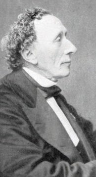
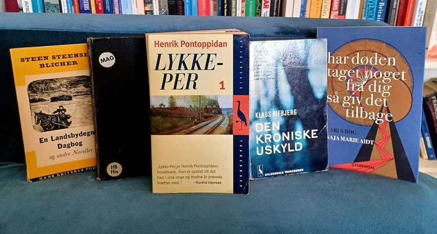
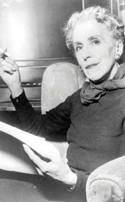
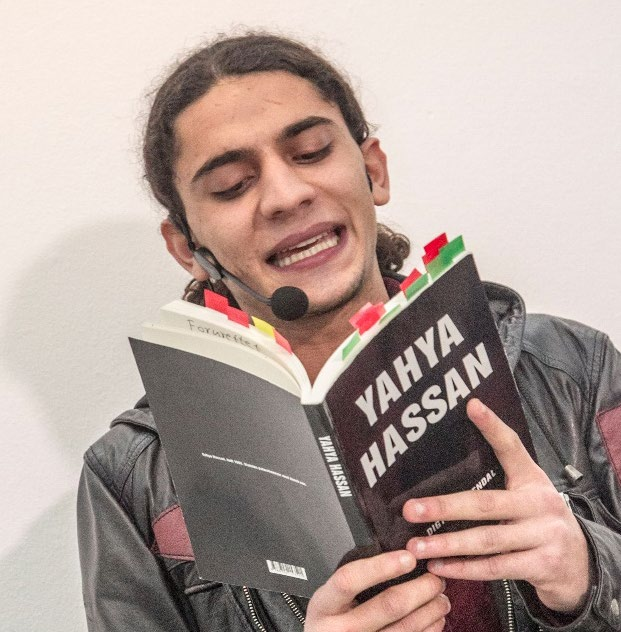
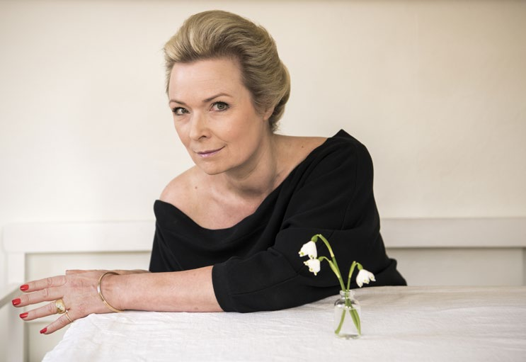

5.2 – LITTERATUR
sidde 146
Den ældste litteratur i Danmark er skrevet på oldnordisk med runer, vikingeti dens bogstaver. Ordet ”runer” betyder ”hemmeligheder”, og runerne blev ofte tillagt magisk kraft. Den mest kendte danske runeindskrift findes på Harald Blåtands Jellingsten fra anden halvdel af 900-tallet. Her fortæller kong Harald, at han vandt sig hele Danmark og Norge og gjorde danerne kristne. Runeskriften blev udbredt overalt i Norden, hvor den visse steder har været anvendt længe efter, at de latinske bogstaver blev indført.
En stor del af middelalderens litteratur blev skrevet på latin. Det gælder også Saxos (cirka 1160-1208) danmarkshistorie, Gesta Danorum (Danernes bedrifter), fra begyndelsen af 1200-tallet. Værket skulle vise, at Danmark var et land i sin egen ret, uafhængigt af tyskerne, og at Danmarks daværende konge Valdemar den Store (1131-82) var landets retmæssige hersker. Saxo fortæller med både drama, fantasi og humor om dansk historie.
Et andet vigtigt værk fra den tidlige litteraturhistorie er Christian 4.s datter Leonora Christinas (1621-98) skildring af sit fængselsophold, Jammers Minde (1673-74, udgivet i 1869). Her beskriver hun sin lange indespærring og ankla gerne mod hende for landsforræderi. Hun fortæller om, hvordan hun kæmper med at finde en mening med livet, og hvordan hun holder øje med alt, hvad der foregår omkring hende.
1700-tallets og oplysningstidens mest fremtrædende dansk-norske forfatter var Ludvig Holberg (1684-1754). Holberg ville fremme oplysningstidens idealer om, at befolkningen gennem oplysning, tolerance og kritisk tænkning kunne blive friere og bedre mennesker.
Han skrev blandt andet satiriske teaterstykker – komedier – en af de mest berømte er Jeppe på Bjerget (1722), hvor den alkoholiserede sjællandske bonde Jeppe bliver bildt ind, at han er herremand. Jeppe vækker tilskuernes medfø lelse, når han spørger sig selv om, hvorfor han drikker, og fortæller om, hvordan han får tæsk af sin kone. Men man ser også kritisk på Jeppe, da han som herre mand er lige så meget en tyran som dem, der plejer at have magten.
Læremateriale Til Indfødsretsprøven
sidde 147
Dansk litteratur fra 1800 til i dag tæller flere verdenskendte forfattere. Den mest berømte er H.C. Andersen (1805-75), der blev født i Odense. Han blev især kendt for sine eventyr, som har glædet både børn og voksne i Danmark og resten af verden gennem næsten to århundreder. Eventyrerne er oversat til over 125 sprog. ”Den lille havfrue”, ”Den grimme ælling”, ”Kejserens nye klæder”, ”Den lille pige med svovlstikkerne” og ”Grantræet” er blandt de mest læste. Andersens eventyr har også inspireret Disneys tegnefilm, blandt andet til filmen Den lille havfrue (1989), som Disney i 2023 genindspillede i en ny version.
Hans eventyr er skrevet til flere alders grupper på samme tid. På den ene side rummer de børnefortællingers fantasi og overnaturlige verden. På den anden side handler de om emner, som er vigtige for voksne: fordomme, fattigdom, snobberi og dobbeltmoral.H.C Andersen (1805-75). H.C Andersen (1805-75).
Adam Oehlenschläger (1779-1850) var en af nationalromantikkens kendteste digtere. Nationalromantikken ville fremme alt, hvad der er særligt dansk i kultur, natur og historie. Oehlenschläger skrev Danmarks ene nationalsang, ”Der er et yndigt land” (1819). Et andet af hans mest kendte værker er digtet ”Guldhor nene” fra 1802, som handler om fundet af to smukke guldhorn fra oldtiden, som siden blev stjålet og smeltet om.
Steen Steensen Blicher (1782-1848) var en af de første danske forfattere, som skrev om menneskers liv i det dengang fjerne og ukendte Jylland, langt væk fra hovedstaden og byen. Han fortalte om bønders, præsters, embedsmænds, omvandrende handelsfolks og fattiges tanker, håb og værdier. Han er blandt andet kendt for Brudstykker af en Landsbydegns Dagbog (1824), hvor hoved personen, en fattig ung mand, fortæller om sit beskedne liv, sine drømme og sin ulykkelige forelskelse i en pige fra adelen, som han ikke kan få.
Det såkaldte ”moderne gennembrud” i slutningen af 1800-tallet ville gøre op med nationalromantikken og samfundets traditioner. Forfatterne forsøgte at udfordre datidens holdninger til for eksempel religion, kultur, familieliv og køns roller, som hidtil var taget for givet. Blandt tidens vigtigste nye værker er Herman Bangs (1857-1912) Ved Vejen (1886). Værkerne beskriver erfaringer omkring køn og samfund, som datiden helst ville glemme og undgå at tale om. Et andet
Læremateriale Til Indfødsretsprøven

sidde 148
hovedværk fra denne periode er Henrik Pontoppidans (1857-1943) Lykke-Per (1898-1904). Pontoppidans store roman handler om Per, som er vokset op på landet i en præstefamilie med traditionelle værdier.
Han tager til København og oplever det moderne samfunds muligheder med blandt andet industri og videnskab, men også en ny rodløs tilværelse. Per har store drømme og planer for en modernisering af Danmark. Pontoppidan modtog Nobelprisen i litteratur i 1917.
Martin Andersen Nexø (1869-1954) skrev især bøger om fattige mennesker og deres kamp for bedre arbejdsforhold og levevilkår. Særlig kendt er romanerne Pelle Erobreren (1906-10) og Ditte Menneskebarn (1917-21). Begge romaner er senere blevet filmatiseret.
Forfatteren Emma Gad (1852-1921) skrev en række skuespil om tidens spørgsmål som kønsroller, moral og politik, der blev opført på Det Kongelige Teater samt andre københavnske scener. Emma Gad mente også, at menne sker gennem klare regler skulle hjælpes til at være sammen med hinanden uden konflikter. Hun er således først og fremmest kendt for ’Takt og Tone – Hvordan Vi Omgås’ fra 1918, som er den bedst kendte danske bog om, hvordan man bør opføre sig. Bogen indeholder derfor en række meget konkrete råd om, hvad man gør i en næsten hver tænkelig situation i hverdagslivet. For eksempel skal man ikke sætte albuerne på bordet eller lægge kniven i munden, når man spiser, mændene bør løfte på hatten, når de hilser, ligesom børn ikke må afbryde voksne, men kun svare venligt og høfligt, når de bliver talt til.Bøger af fem danske forfattere: Steen Steensen Blicher, Emma Gad
Bøger af fem danske forfattere: Steen Steensen Blicher, Emma Gad, Henrik Pontoppidan, Klaus Rifbjerg og Naja Marie Aidt. Foto: Tue Schou Pedersen.
Læremateriale Til Indfødsretsprøven

sidde 149
I 1900-tallets danske litteraturhistorie er Johannes V. Jensen (1873-1950) og Karen Blixen (1885-1962) nogle af de mest værdsatte forfattere. Johannes V. Jensens bedst kendte roman er Kongens Fald fra 1901, en historisk roman om 1500-tallets Danmark. Den fortæller om kong Christian 2.s (1513-23) forgæves kamp for at beholde magten som konge. Den handler om brutalitet, ambitioner og begyndelsen på Danmarks grad vise nedgang til en småstat frem mod 1800-tallet. Et andet hovedværk af Johannes V. Jensen er Himmer landshistorier (1898-1910), som er en samling af kortere fortællinger, der handler om bønder og fattigfolk i Himmerland i Jylland, hvor Johannes V. Jensen voksede op. I 1944 fik Johannes V. Jensen Nobelprisen i litte ratur.
Karen Blixens bedst kendte værk er Den Afrikanske Farm fra 1937. Den handler om hendes oplevelser i Kenya i de første årtier af 1900-tallet, som dengang var en britisk koloni. Blixen fortæller her om livet på sin kaffefarm. Hun er på den ene side præget af de europæiske koloniherrers tankegang, men hun er på den anden side kritisk over for koloniherrerne og deres behandling af den afrikanske befolkning, og hun prøver at indrette livet på sin farm på en anden måde. Hendes værk udtrykker hendes kærlighed til og respekt for Afrikas folk, kultur og natur. Hun fortæller endvidere om den tragiske kærlighedshistorie, hun selv oplever med en engelsk mand. Karen Blixen udgav på både dansk og engelsk en række fortællinger om menneskelige lidenskaber, længsler og livsdramaer, som har gjort hende kendt i hele verden.Karen Blixen (1885-1962).
Karen Blixen (1885-1962).
Læremateriale Til Indfødsretsprøven

sidde 150
Tove Ditlevsen (1917-76) voksede op i en fattig arbejderfamilie på Vesterbro i København, og hun drømte allerede som barn om at blive digter, selv om hendes far sagde, at det kunne piger ikke blive. Hun skrev både digte, romaner og noveller om at være barn, kvinde og fattig i datidens samfund, og blandt hendes hovedværker er Barn dommens Gade (1943). Tove Ditlevsen er i de seneste år, længe efter sin død, også blevet populær i udlandet – især i USA, Storbritannien og Tyskland, hvor hendes erindringsserie, Barndom, Ungdom og Gift (1967-71) er udgivet i nye oversættelser.
Blandt forfatterne i det 20. århund rede var Klaus Rifbjerg (1931-2015) en af de mest produktive. Mest kendt er romanen Den kroniske uskyld (1958), der fortæller om samfun dets ungdom og skoleliv. Romanens kontante og morsomme kritik af skolen og de voksnes snæversyn har gjort den populær hos generationer af unge læsere.Tove Ditlevsen (1917-76). Tove Ditlevsen (1917-76).
Midten af 1960’erne blev kendetegnet af en udvikling i dansk litteratur, som gik i mange nye retninger med forfattere som Suzanne Brøgger (født 1944). Mens Suzanne Brøgger i høj grad skrev romaner om kvindefrigørelse, var en række andre forfattere inspireret af rockmusik, ungdomsoprør og populærkultur. En anden markant digter var Inger Christensen (1935-2009). Hendes digt ”Sommer fugledalen” (1991) anses som et af de store værker i nyere dansk litteratur. Inger Christensens værker er oversat til mange sprog. Hun blev flere gange nævnt som en stærk kandidat til Nobelprisen i litteratur.
Naja Marie Aidt (født 1963) startede også sit forfatterskab som digter men har siden desuden skrevet romaner og noveller. Hendes mest kendte værk er Har døden taget noget fra dig, så giv det tilbage. Carls bog (2017) om sorgen over hendes unge søns tragiske død.
Læremateriale Til Indfødsretsprøven
sidde 151
Michael Strunge (1958-86) fik i 1980’erne mange unge læsere for sine digte om drømme, depression, kærlighed, oprør og storbyliv. Hans hovedværk er Verdenssøn (1985). En af Michael Strunges senere læsere var Yahya Hassan (1995-2020), der debu terede med digtsamlingen Yahya Hassan (2013). Samlingen blev solgt i et rekordoplag på langt over 100.000 eksemplarer og er den bedst sælgende digtsamling i Danmark nogensinde. Hassans digte om opvækst og ungdomsliv som indvandrer i et ghettokvarter skabte voldsom debat, fordi de pegede på alvorlige samfunds problemer og på sammenstød mellem danske normer og normerne i socialt belastede indvandrermiljøer.
En af nutidens markante danske forfattere er Helle Helle (f. 1965). Hendes nedto nede beskrivelser af hverdagslivet i Danmarks mindre byer blander humor, alvor, sorg og glæde. Med romanen Rødby-Puttgarden (2005) brød hun igennem til et større publikum. Rødby-Puttgarden skildrer de unge søstre Jane og Tines hverdagsliv i Rødbyhavn på Lolland, hvor de begge arbejder som ekspeditricer på færgen til Puttgarden. De seneste år har Helle Helle udgivet romanerne om Hafni. I romanen Hafni fortæller (2023) tager en kvinde ud på en nøje planlagt rejse gennem Danmark for at fejre sin skilsmisse. Hun spiser masser af smør rebrød og møder provinsens mennesker. Men alt går galt, og rejsen, der kun skulle have varet otte dage, ender med at tage en måned, for Hafni vil ændre sig selv, men ved ikke hvordan. Nogle år senere – i romanen Hey Hafni (2025) – møder vi Hafni igen, hvor hun er rejst til byen Brighton på Englands sydkyst for at genfinde lykken, hvilket heller ikke viser sig så enkelt.
En populær genre i nutidig litteratur er den såkaldt auto-fiktion, hvor forfatteren beskriver oplevelser og erfaringer fra sit eget liv og blander dem med fiktive elementer. Blandt temaerne er opvæksten i mindre samfund, at vokse op i en dysfunktionel familie og om ikke "at høre til", når man er fanget mellem på den ene side fordomme og traditionelle normer og på den anden side ønsket om at udleve sine egne ambitioner og følelser. Yahya Hassan (1995-2020). Foto: Kim Haugaard/Ritzau Scanp
Yahya Hassan (1995-2020). Foto: Kim Haugaard/Ritzau Scanpix.
Læremateriale Til Indfødsretsprøven

sidde 152
Leonora Christina Skovs (f. 1976) Den, der lever stille (2017) handler om forfat terens opvækst på dydens smalle sti – "at leve stille" – og om ønsket om at vinde kærlighed og anerkendelse fra forældre, som næsten altid kan finde og forstørre problemer i det, hun gør. Da hun må erkende, at hun er lesbisk, er hun stillet over for valget mellem på den ene side at udleve sine følelser og på den anden side miste forældrenes accept.
Thomas Korsgaard (f. 1995) og Glenn Bech (f. 1991) skriver begge ligeledes ud fra erfaringer om at være i en familie og i et miljø, hvor det ikke er velset at skille sig ud. Endvidere tager deres erindringer afsæt i en barndom og ungdom i fami lier med sociale og psykiske problemer. I roman-trilogien Hvis der skulle komme et menneske forbi (2017), En dag vil vi grine af det (2018) og Man skulle nok have været der (2021) fortæller Thomas Korsgaard – med både alvor og ironi – om den opvækst, han oplevede, med mangel på penge, uddannelse, kærlighed og med fysisk og psykisk vold som en del af opdragelsen.
Glenn Bechs debutbog Farskibet (2021) beskriver det traume, som farens selv mord har givet ham. Centralt i bogen står en familie, som er ødelagt af det, Glenn Bech kalder "giftig maskulinitet". Det vil sige en opfattelse af at være mand, som indebærer dominerende, intolerant og voldelig adfærd. En maskulinitet, som var umulig for faren at leve i, vanskelig for ham selv at være homoseksuel i, og som også viser sig gennem morens voldelige kærester. Glenn Bech er ikke blot kritiker af normer om køn og seksualitet men også af storbyens eliter, der beskyldes for manglende kendskab til provinsen og til samfundets mange mindre privilegerede befolkningsgrupper. Denne kritik kommer ikke mindst til udtryk i hans politiske kampskrift Jeg anerkender ikke længere jeres autoritet (2022).Helle Helle (f. 1965). Foto: Søren Bidstrup/Ritzau Scanpix.
Helle Helle (f. 1965). Foto: Søren Bidstrup/Ritzau Scanpix.
Læremateriale Til Indfødsretsprøven

Fonte: Læremateriale til Indfødsretsprøven, SIRI.